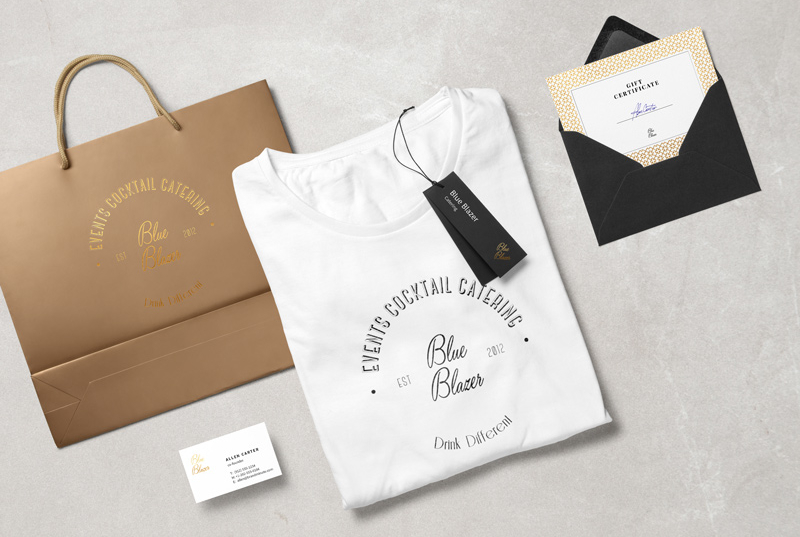
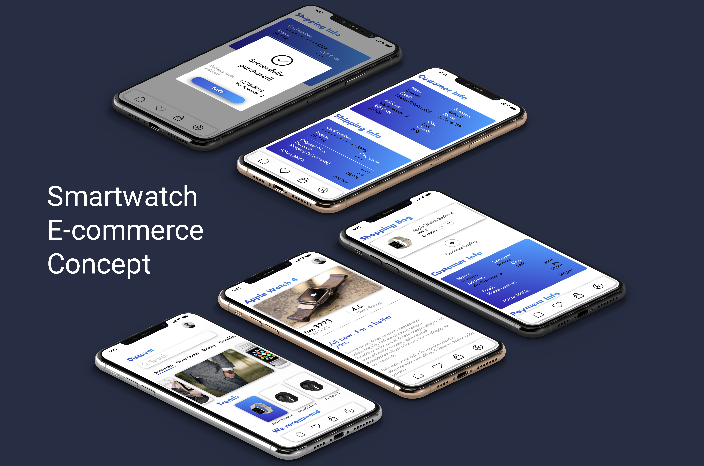

I believe in words, in their extraordinary emotional power and the infinite possibilities of communication. I define myself as a curious of life, as well as a lover of technology and innovation, who has found in modern approaches and methodologies of Web Design his professional expression.
LORENZO BOTTONI
I'm a 25 years old Junior Frontend Developer & Creative Thinker. I live in Milan.
Work Experience
Web Design Junior - MakeMark Company
The aim of this internship experience was to get to know the communication market and see the studies undertaken realized. Besides contributing to the research and analysis phase in order to have a complete and clear picture of the context of the various projects, I supported ideas and initiatives of the agency.
I had the opportunity to follow all the processes that characterize the development of media for a client (logo, graphics and website) and the evolution of an integrated communication campaign. I was also able to deal with the creation of content for landing pages, websites and editorial plans for social media, applying basic techniques of UX Writing, Conversation Design (Google Home and chatbot) and Frontend programming (Html, Css, Javascript).
Education
Omnichannel Communication Specialist - ITS Rizzoli
The course in multi-channel communication allowed me to understand from the language of graphics and printing to the web, from information architecture to infographics. I learned how to communicate the launch of a product, brand or event by managing the flow of communication on multiple online and offline media.
Code Master - Talent Garden
The Master in Web Programming at Tag Innovation School served me to learn the basics of Frontend programming to design and develop websites. I created web application interfaces (mobile and desktop), worked in teams and collaborated with startups. During the 12 weeks of full-immersion, I have tackled the following topics: fundamentals of User Experience and User Interface, HTML5, CSS3, PHP, Javascript, frameworks like Symphony, Bootstrap and JQuery.
Projects


